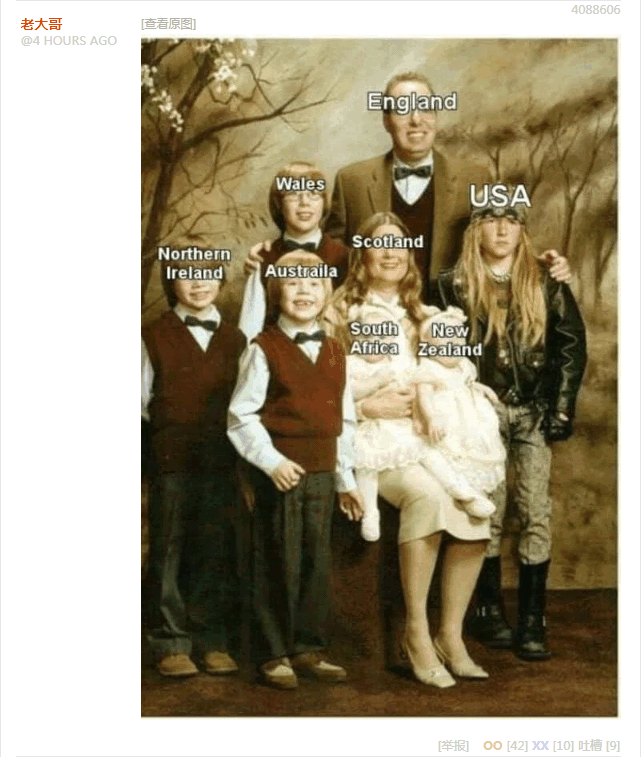
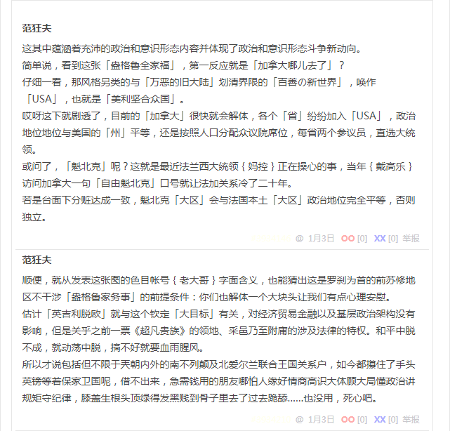

无聊图 4088606
这其中蕴涵着充沛的政治和意识形态内容并体现了政治和意识形态斗争新动向。
简单说，看到这张「盎格鲁全家福」，第一反应就是「加拿大哪儿去了」？
仔细一看，那风格另类的与「万恶的旧大陆」划清界限的「百善の新世界」，唤作「USA」，也就是「美利坚合众国」。
哎呀这下就剧透了，目前的「加拿大」很快就会解体，各个「省」纷纷加入「USA」，政治地位与美国的「州」平等，还是按照人口分配众议院席位，每省两个参议员，直选大统领。
或问了，「魁北克」呢？这就是最近法兰西大统领妈控正在操心的事，当年戴高乐访问加拿大一句「自由魁北克」口号就让法加关系冷了二十年。
若是台面下分赃达成一致，魁北克「大区」会与法兰西本土「大区」政治地位完全平等，否则独立。
顺便，就从发表这张图的色目帐号老大哥字面含义，也能猜出这是罗刹为首的前苏修地区不干涉「盎格鲁家务事」的前提条件：你们也解体一个大块头让我们有点心理安慰。
估计「英吉利脱欧」就与这个钦定「大目标」有关，对经济贸易金融以及基层政治架构没有影响，但是关乎之前一票《超凡贵族》的领地、采邑乃至附庸的涉及法律的特权。和平中脱不成，就动荡中脱，搞不好就要血雨腥风。
所以才说包括但不限于兲朝内外的「南不列颠及北爱尔兰联合王国」关系户，如今都攥住了手头英镑等着保家卫国呢，借不出来，急需钱用的朋友哪怕人缘好情商高识大体顾大局懂政治讲规矩守纪律，膝盖生根头顶绿得发黑贱到骨子里去了过去跪舔……也没用，死心吧。
补充
为啥没提到「撒克逊」，还特意提到了划时代网文大作《超凡贵族》，其中都有历史背景。
简单说，「纽约」字面意义来源于不列颠的「约克」（York
）郡，当年七国时代本来是撒克逊人的地盘，被盎格鲁人吞并了。现在的「英格兰」字眼就是「盎格鲁」的演变，不列颠特色基督教「圣公会」字面上就直接写作「盎格鲁宗」。
当然，黑斯廷斯战役以来不列颠「龙裔」就是诺曼贵种，但每次号召傻哔韭菜「撸起袖子加油干，帝国是奋斗出来的」，或者发配傻哔炮灰「试看将来的寰球，必是女王的领地」，还是诈骗傻哔抹布「让不列颠再次伟大」，宣传的对象贱种屁民，都还是盎格鲁红脖子吖。
不过呢，在那不列颠特色的封建主义核心价值观当中，灭国不绝其祀，哪怕只看作为「龙裔」封号的长子「威尔士亲王」和次子「约克公爵」，也知道通常仅仅是当地乡贤换了个主子敬礼而已。
于是「约克」这拨撒克逊贵种，在「万恶的旧大陆」和「百善の新世界」都是呼风唤雨的存在。
至于能否反攻倒算篡党夺权，现在已经不能用当年附庸关系解释从大英帝国开始的全球化时期的封建义务了，更不能指导资本主义社会尤其是战后迅猛发展渗透世界每个犄角旮旯以来「认钱不认人」的政治规矩和组织纪律。
就说「百善の新世界」吧，哪怕只看美利坚央妈团，纽约联储规模最大，资产占比三成以上，发言权当然正相关。相应的政治地位也有，目前美帝灯塔国大统领川普，以及克林顿两口子，还有报名竞选下任大统领的彭博，都是纽约当地豪门，与使用「约克家族」影射的撒克逊贵种关系密切。
而前任奥巴马则不是，2008年在获取了波士顿和芝加哥俩央妈的支持之后，才在党内初选就击败了纽约央妈支持的希拉里。这些都是「建制派」内部潜规则甚至显规则，无论民主党还是共和党，无论左翼还是右翼，无论保皇还是造反，背后都有至少一个央妈支持。
关于纽约的其它细节不提了，网上都有，包括但不限于「薄大统领」家「瓜娃子」就读的哥伦比亚大学。